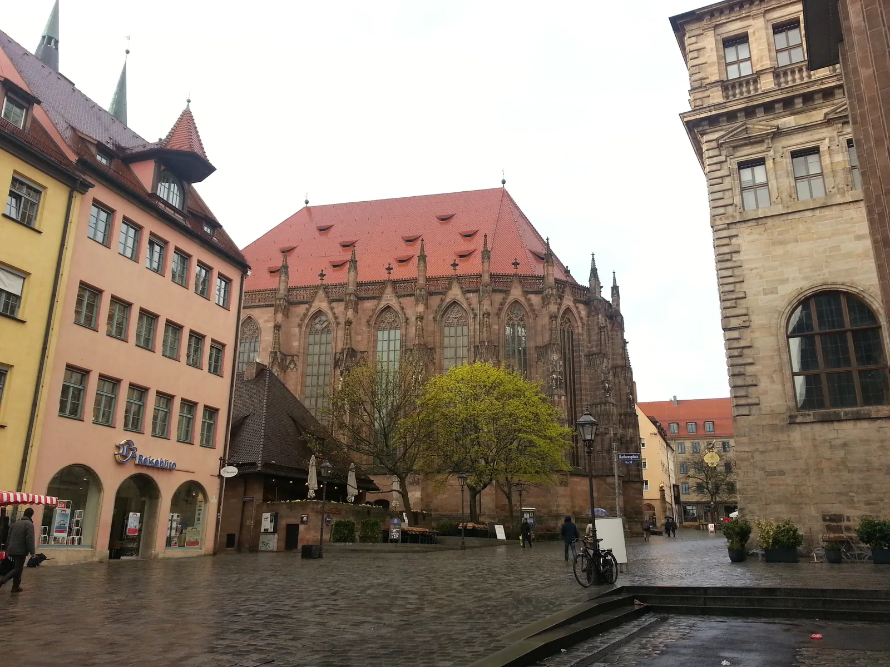
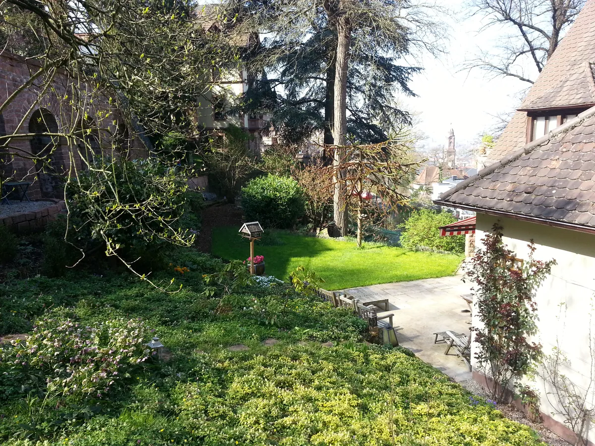
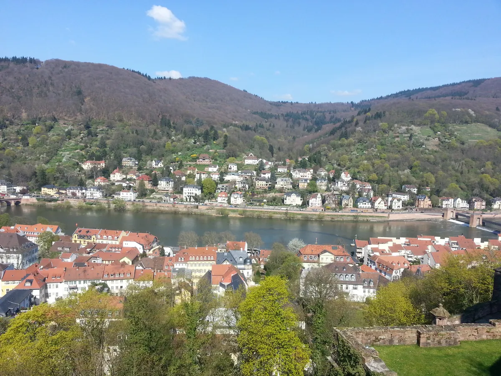
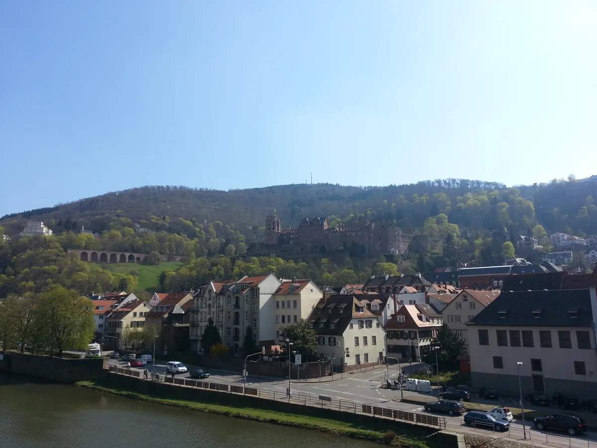
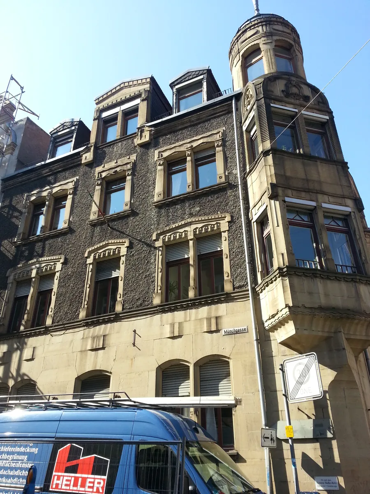

VISIT-02
海外考察随笔 · FIELD NOTE
2012 德国行外记：科隆与海德堡的两次停留
Two off-itinerary stops in Cologne and Heidelberg — a pause in the 2012 Germany trip.

纽伦堡看完展会之后，那趟德国行程里还去了科隆和海德堡。跟 FENSTERBAU FRONTALE 比，这两站不是产业考察，更像是行程里自然带出来的两次停留——去了科隆大教堂，去了海德堡大学。
老实说，这两个地方留下的商业判断不多。它们更多是"考察之外"的记忆——看了德国最著名的哥特式教堂之一，走了一趟欧洲最古老的大学城之一。对于一个正在密集看工厂、看展会、看产业链的人来说，这两站更像是喘口气，顺便感受一下这个国家除了"制造业强国"之外的另一面：它的历史、它的教育传统。


这篇不勉强扩展成一篇"考察报告"。它的价值，更多是证明 2012 年那趟德国之行不只是一场展会，而是一次完整的国家认知——既看了产业，也看了这个国家的历史和教育底子。这两者放在一起，才是当时"为什么觉得德国什么都值得学"的完整答案。
GTN 判断视角
既看了产业，也看了这个国家的历史和教育底子。这两者放在一起，才是当时"为什么觉得德国什么都值得学"的完整答案。


产业是一个国家的结果，不是原因——撑起那些工厂的，是它沉淀了几百年的历史耐心，和一套怎么培养人的教育传统。
——董立鑫 海鑫汇创始人兼执行总裁，新加坡世贸秘书长兼首席运营官
本文整理自董立鑫（Bruce Dong）海外产业考察记录，首发于海鑫汇。
想建立自己的产业判断坐标？先从一次海外考察首诊开始。
预约首诊 →